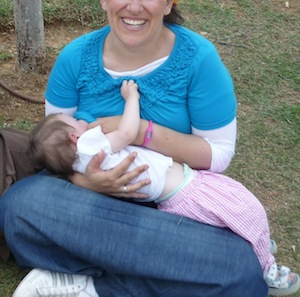

The breastfeeding toddler of 3 and 4 years of age was common in much of the world until recently. In many societies it is still common for toddlers to breastfeed and the world wide average age of weaning is around four years old. The World Health Organization and UNICEF promote breastfeeding for two years and longer, and the American Academy of Pediatrics currently recommends breastfeeding for at least one year and as long after as both mother and baby desire. The Canadian Pediatric Society acknowledges that women may want to breastfeed for two years or longer and Health Canada has publicized a statement similar to UNICEF’s. Do you want a breastfeeding toddler?Beyond the health issues and benefits, are you and your baby enjoying your breastfeeding relationship? If your answer is, yes, and you and your child are both still enjoying the closeness of breastfeeding, why give it up? Breastfeeding mothers know that nursing is more than food; it is an act of love. This continues when the baby becomes a toddler. Breastfeeding provides you with an easy way to give comfort when a toddler is unwell, sad, tired, or hurt, possibly making mothering your toddler a little easier. Anyone without bias, who has ever observed a breastfeeding toddler or an older baby nursing, can bear witness that there, is something dreamlike, something exquisite, something far beyond “just getting a milk fix” going on. A toddler’s pleasure in nursing is far beyond just the milk. Toddlers grow and develop at such a rapid pace the closeness that comes from breastfeeding can provide stability and serenity like nothing else. Breastfeeding ensures physical closeness between mother and child as life is sometimes hectic even (perhaps especially) in the happiest of homes - especially in families with older children or with mothers working outside of the home. Erika's review of breastfeeding toddler book, Mothering Your Nursing Toddler. Benefits for Toddlers The American Academy of Family Physicians observed that children weaned before two years of age are at increased risk of illness and nursing tots have fewer illnesses and illnesses of shorter duration than non-breastfed toddlers. Breast milk is the healthiest milk for your baby. Although the vast majority of toddlers eat a well rounded diet, breast milk continues to be an important part of your baby’s diet well beyond 6 months. Your breast milk does not suddenly become nutritionally inappropriate for your child at any time or stage due to your child’s age. Even after six months,12 months, 18 months and onward, your milk continues to provide immunities and vitamins, protein, fat, and other nutritionally important and suitable essentials which babies and children need and can help protect them from illness and allergies. Breast milk still contains immunologic factors that help protect your baby from illness and infection. As a matter of fact, certain immune factors INCREASE in the second year of life. There are actually more protective elements in your milk for your child’s second year of life, because children over a year old are usually exposed to more sources of infection. If your toddler does get sick, breastfeeding will help soothe him. Breast milk is easily digested and a toddler with a stomach virus may only be able to tolerate human milk and nothing else. Even when they refuse all food and drink, the breastfeeding toddler can still be persuaded to breastfeed. Children with serious or many allergies can continue to grow and benefit from breast milk while their systems mature and they are better equipped to digest other foods. Research on the relationship between IQ and breastfeeding has shown the greatest gains for those children breastfed the longest. Are breastfeeding toddlers more dependent?There may be external pressures or questions about weaning. Some experts deem the breastfeeding toddler, who is not weaned, as dependent. So does breastfeeding cause toddlers to be dependent? Our culture has grown to be fixated with early independence for children. If a need is met, it goes away. If a need is unmet, it remains. Often society pushes children to become independent before they are ready anyway. It seems that it's the anxious, clingy children that have been pushed into situations requiring "independence" too early. The more a child is pushed away, the more they tend to cling. A breastfeeding toddler is having his dependency needs met. Don’t worry. Children usually wean themselves between the ages of 2 and 4 years, and are typically extra independent, and extra confident in their independence. The breastfeeding toddler receives comfort and security from the breast. Breastfeeding helps a toddler feel good about himself, because his needs are being met. The toddler who is allowed to test things for himself, at his own pace, and when he is ready discovers self-confidence and self-worth and it flourishes! Benefits for MothersMore and more women are now breastfeeding their babies, and more and more are also finding that they enjoy breastfeeding enough to want to continue longer than the usual few months they initially thought they would. As a mother, you recognize your children's needs, you enjoy the closeness, you want to offer comfort, and there are even important health benefits. The natural child-spacing result of breastfeeding may possibly continue throughout the baby's second year. While breastfeeding alone is not a reliable means of birth control, extended nursing in some women suppresses ovulation and delays the return of fertility. | Not all mothers will view this as a benefit especially if you are anxious to get pregnant again. In some cases, even infrequent breastfeeding is enough to prevent pregnancy and a nursing mother who wants to get pregnant may face tough decision about extended breastfeeding. |
Breastfeeding reduces the risk of breast cancer, ovarian cancer, uterine cancer, and endometrial cancer. Breastfeeding reduces the risk of rheumatoid arthritis and has been found to protect against osteoporosis. Breastfeeding moms have a tendency to lose weight easier which is a proven health benefit for preventing obesity, heart disease, diabetes, and illnesses related to being overweight. Visit Parenting Toddlers for tips on healthy eating for toddlers.
| ![XML RSS]()


![Add to My MSN]()
![Subscribe with Bloglines]()